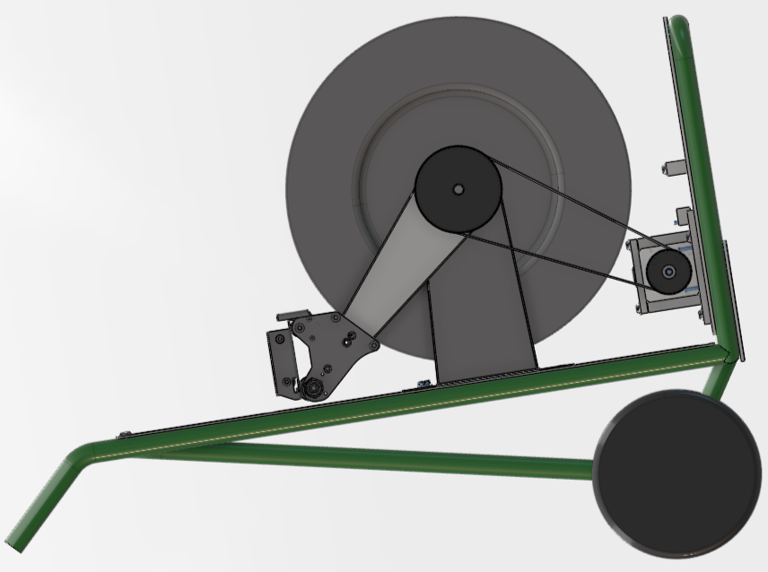
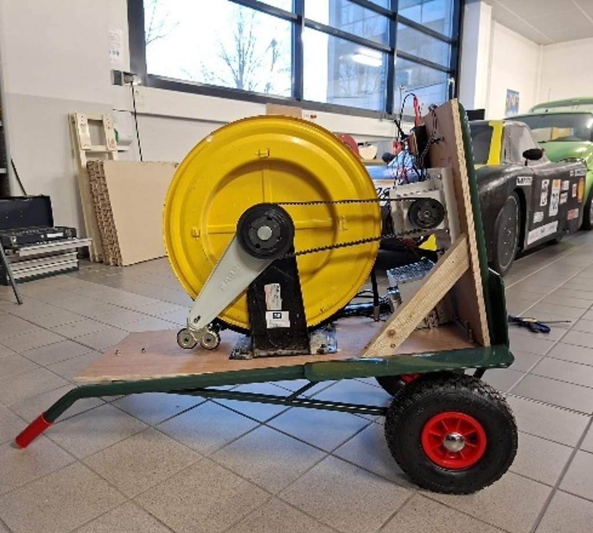
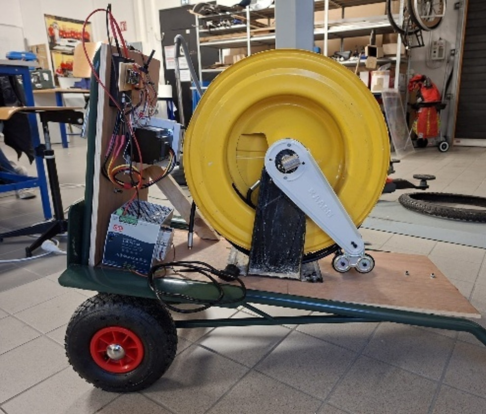

P / 02
FlyRenov -
Enrouleur de tuyau asservi pour drone
Le contexte
FlyRenov nettoie les toitures avec un drone. Le drone ne transporte pas son eau : elle lui arrive du sol par un tuyau de 60 mètres sous haute pression. Ce tuyau est enroulé sur une machine posée au sol, appelée enrouleur.
Cette machine est le maillon faible de tout le système. Si elle est trop lourde à transporter ou trop lente à dérouler le tuyau, le drone ne peut pas travailler.
L'entreprise nous a confié sa refonte complète, à deux, dans le cadre de notre projet de 4ᵉ année. Nous étions encadrés par M. Mourioux (responsable de la spécialité Mécatronique à l'ENSIL-ENSCI) et par Mme Postec, ingénieure mécatronique R&D chez FlyRenov.
Le problème de la machine existante
La première version fonctionnait, mais restait inutilisable sur le terrain. Nous avons relevé quatre défauts :
- Beaucoup trop lourde. Plus de 40 kg, montés sur un gros chariot. Il fallait deux techniciens pour la bouger - et la hisser sur un toit devenait impossible.
- Trop de moteurs. Quatre en tout, dont un dédié uniquement à répartir le tuyau proprement sur la bobine. Ce mouvement peut pourtant être obtenu sans moteur du tout.
- Électronique trop compliquée. Un réseau de communication complet (bus CAN) reliait ces quatre moteurs. Pour une machine tenant sur un chariot, c'est une usine à gaz : plus de code, plus cher, et plus de pannes possibles.
- Impossible à entretenir. Les moteurs étaient vissés sur des supports fixes. Résultat : impossible de retendre la courroie quand elle se détend, ni de la changer.
Notre conclusion : inutile de réparer cette version. Il fallait tout reprendre.
Notre approche : simplifier
Une règle a guidé toute la refonte : supprimer ce qui n'apporte rien. Chaque pièce devait justifier sa présence. Quatre décisions en ont découlé.
- Un diable du commerce à la place du chariot. Il pèse 14 kg et supporte 250 kg. Une personne seule peut désormais monter l'enrouleur sur un toit.
- Deux moteurs au lieu de quatre. Nous avons supprimé le moteur qui répartissait le tuyau sur la bobine et l'avons remplacé par une simple courroie, reliée à l'axe principal. Le tuyau se répartit donc tout seul, à la bonne vitesse, sans moteur ni code.
- Une carte au lieu d'un réseau. Le bus CAN laisse place à un ESP32 qui parle directement aux contrôleurs des moteurs. C'est plus simple, plus fiable, plus facile à déboguer - et l'ESP32 a le Wi-Fi, indispensable pour la suite du projet.
- Un support moteur réglable. Nous l'avons dessiné et usiné nous-mêmes à l'école. Il coulisse, ce qui permet de retendre la courroie en quelques secondes - le défaut n°1 de l'ancienne version.
Choisir le moteur : partir du pire scénario
Pour choisir le moteur, nous avons imaginé la situation la plus difficile qu'il aurait à affronter : la machine posée sur un toit, la bobine pleine, et les 60 mètres de tuyau qui pendent dans le vide. C'est là que le moteur force le plus.
Le calcul se déroule ainsi :
- 60 mètres de tuyau remplis d'eau pèsent 7,09 kg - c'est ce que le moteur doit retenir.
- Plus la bobine est pleine, plus l'effort demandé au moteur augmente. Un petit script Python simule l'enroulement couche par couche et donne le cas le plus défavorable.
- De là, on obtient l'effort nécessaire, que nous majorons de 50 % par sécurité : le moteur doit fournir 25 Nm.
- Le drone monte à 3 m/s : la bobine doit donc tourner à 180 tours/minute.
- Ces deux chiffres donnent la puissance nécessaire : 475 W. Nous avons choisi un moteur Nanotec de 534 W, qui garde ainsi une marge confortable.
L'électronique et la commande
Trois éléments composent le système : une alimentation Mean Well de 960 W qui fournit le courant, un contrôleur Flipsky VESC qui pilote le moteur, et une carte ESP32 qui donne les ordres. L'ESP32 parle au contrôleur en UART. Nous avons soudé tout le circuit sur une plaque plutôt que d'utiliser une breadboard : les vibrations de la machine auraient fini par créer des faux contacts.
L'opérateur dispose d'un bouton pour chaque sens de rotation et d'une molette pour régler la vitesse. Deux sécurités sont écrites dans le code :
- Le moteur ne tourne que si un seul bouton est enfoncé. Aucun bouton, ou les deux à la fois par erreur : arrêt immédiat.
- La vitesse monte toujours progressivement. Même si l'opérateur pousse la molette à fond d'un coup, le moteur accélère en douceur. Sans cela, le à-coup pourrait casser les dents de la courroie ou abîmer le réducteur.
Démonstration
Galerie



Résultats : avant / après
- Poids de la structure : plus de 40 kg → 14 kg
- Personnes nécessaires pour la déplacer : 2 → 1
- Nombre de moteurs : 4 → 2
- Électronique de commande : un réseau CAN à 4 nœuds → une seule carte ESP32
- Coût de la motorisation : nettement réduit, en supprimant le matériel surdimensionné
Statut : preuve de concept
Ce que nous avons livré est une preuve de concept, pas une machine finie. Le but était de valider l'architecture, pas de la produire en série.
C'est pourquoi le support moteur a été usiné en PVC, une matière peu chère, et non en aluminium. Ce prototype est fait pour être jeté : il sert à vérifier que les pièces s'ajustent bien et que le réglage de la courroie est pratique. Une fois ces points confirmés, on peut passer à l'aluminium sans risquer de gâcher une matière coûteuse et des heures de machine.
Nous avons aussi conçu les pièces pour qu'elles soient simples à fabriquer : tous les trous ont le même diamètre, ce qui permet de tout usiner avec un seul outil, sans jamais le changer. Et toutes les pièces ont la même épaisseur, pour être découpées dans une seule plaque.
Perspectives
Le but final de FlyRenov est un enrouleur qui suit le drone tout seul. Le choix de l'ESP32, avec son Wi-Fi, ouvre déjà cette porte. Trois chantiers restent à mener :
- Suivre le drone automatiquement. Le drone enverrait sa position GPS à l'enrouleur, qui déroulerait juste ce qu'il faut de tuyau. La contrainte : toujours laisser 1 à 2 mètres de mou au sol, pour ne jamais tirer sur le drone en vol.
- Enrouler le tuyau bien serré, sans tirer sur le drone. Deux besoins contradictoires. La solution envisagée est un système à galets qui sépare la machine en deux zones : le tuyau est tendu côté bobine, détendu côté drone.
- Protéger l'électronique. Au rembobinage, le tuyau entraîne le moteur, qui se met alors à produire du courant au lieu d'en consommer. Ce courant peut détruire l'alimentation. Il faudra soit le dissiper en chaleur, soit le stocker dans une batterie.
Rapport de projet
Le rapport complet (34 pages) détaille l'état de l'art, les notes de calcul, la modélisation CAO, l'architecture électronique et les annexes de dimensionnement.
Technologies
- 3DEXPERIENCE (CATIA)
- ESP32
- VESC / FOC
- UART
- C / C++
- Python
- Usinage CNC 3 axes
- DFMA
- Dimensionnement mécanique (RDM)